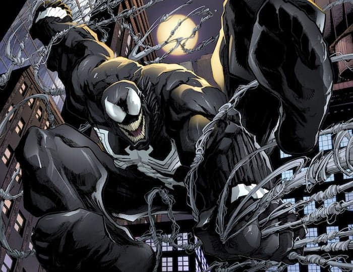
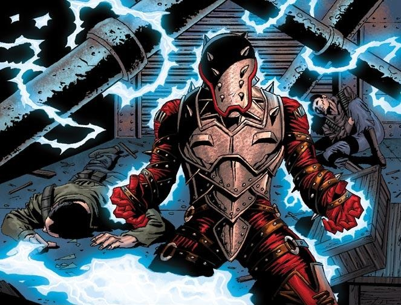
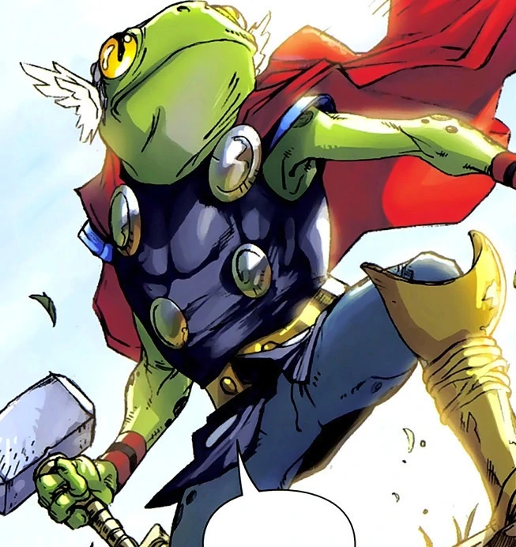

Venom
Venom has gone through many incarnations. First introduced as an alternate suit and one off villain of Spiderman, Venom eventually became popular enough to be a forever mainstay in the Marvel Comics World. Venom has gone through many hosts and has been in space, the military, and most recently The King in Black. However, Eddie Brock gave up the mantle of Venom and handed it to his son Dylan Brock.
Penance
Robert or Robbie Baldwin was formerly known to the comic book readers as Speedball. Speedball became Penance after the effects of an explosion during the Arc Civil War. As a result of the explosion 612 civillians were killed including 60 children. Those two numbers mean a lot to speedball now penance as 612 is the amount of spikes in his new armor and only 60 of them penitrate the skin.
Throg
A spin off of Thor, Throg was introduced alongside The Pet Avengers. Originally named Simon Walters, a Mississippi State football player, was cursed by a witch because he sisn't repay her for allowing him to speak with his dead wife. Wandering through the streets of new york as a frog he eventually met thor and helped him fight his borother Loki. Simon eventually was able to wield the hammer and had one made for himself.